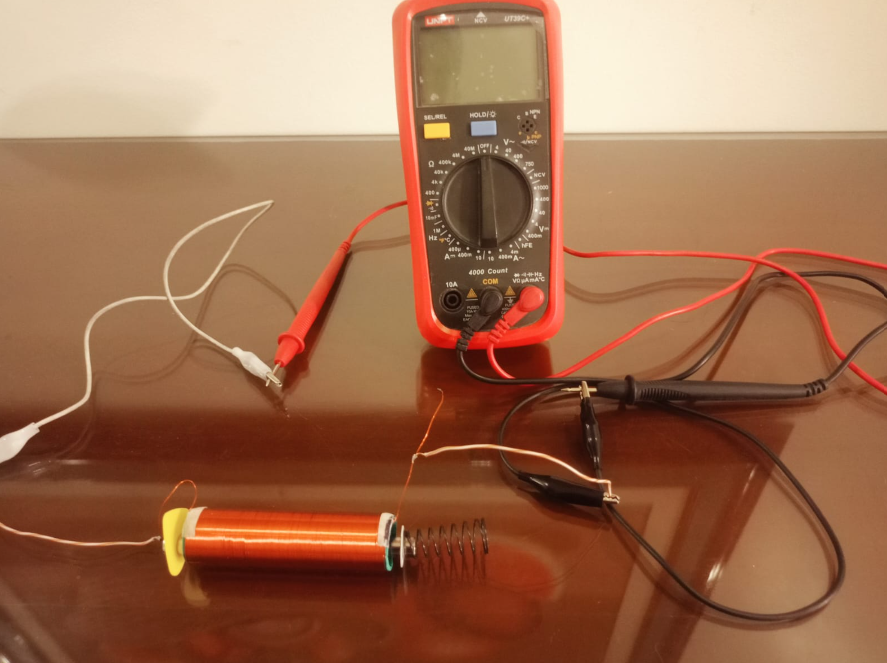
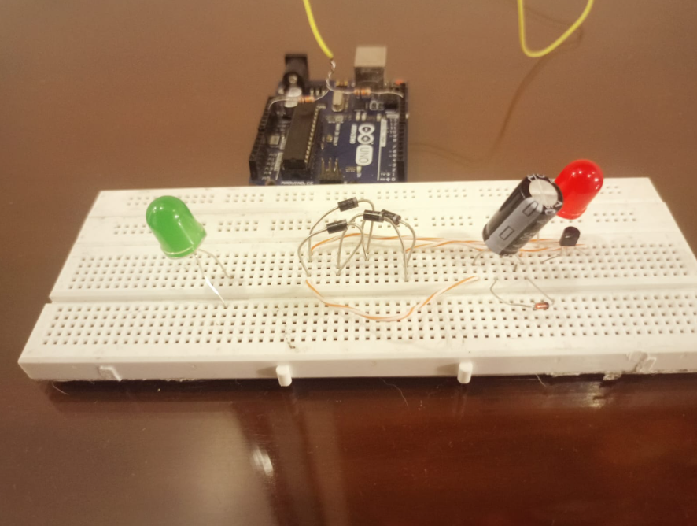

GRUPO: MATERIA OSCURA
Universidad Nacional de Colombia
Nuestro KineStep transforma una acción tan cotidiana como caminar en una fuente de electricidad 100% limpia. Este proyecto nace con un objetivo claro: aprovechar la energía cinética que normalmente se desperdicia en las pisadas humanas y demostrar que la recolección de energía a pequeña escala (Energy Harvesting) es una solución real y viable para el futuro.
Debajo de la superficie, la magia ocurre gracias a la física pura. Un sistema mecánico de suspensión impulsa un potente imán de neodimio a través de una bobina de cobre, induciendo voltaje instantáneo mediante la Ley de Faraday.
Diseñamos un "cerebro" electrónico que domina esta energía. Un puente de diodos Schottky rectifica la corriente hacia un condensador. Cuando la energía acumulada alcanza el punto perfecto, un circuito inteligente (Diodo Zener + Transistor) libera toda la carga de golpe, produciendo un destello intenso. Más que encender un LED, estamos iluminando el camino hacia las ciudades inteligentes.

El núcleo de nuestro panel generador se basa en el principio de inducción electromagnética, gobernado principalmente por la Ley de Faraday. Esta ley establece que un campo magnético que cambia con el tiempo a través de un circuito de cable inducirá una fuerza electromotriz (FEM) o voltaje.
En KineStep, el cambio de flujo magnético se logra mecánicamente: al pisar la baldosa, un sistema de resortes empuja rápidamente un imán permanente a través del centro hueco de nuestra bobina.
Observa a KineStep en acción. En esta demostración, mostramos cómo la presión mecánica ejercida sobre el panel es transformada, acondicionada y finalmente liberada como un pulso de luz utilizable.
Dado que el módulo construido es un prototipo básico para validar el principio físico, utilizamos un Arduino como etapa de simulación. Esto nos permite simular la corriente alterna continua que generaría un modelo a escala industrial (múltiples baldosas y tránsito constante), comprobando cómo nuestro circuito limpia la señal con gran estabilidad didáctica.
Durante las pruebas experimentales, evaluamos el comportamiento del voltaje en el condensador integrador y su impacto sobre la carga final (LED):
| Tiempo (s) | Voltaje Condensador (V) | Estado del LED |
|---|---|---|
| 0.0 | 0.00 | Apagado (Región de Corte) |
| 1.0 | 1.20 | Apagado (Cargando) |
| 2.0 | 2.50 | Apagado (Cargando) |
| 3.0 | 3.40 | Apagado (Umbral Zener alcanzado) |
| 3.5 | 4.02 | Disparo / Destello Limpio (Saturación) |
| 3.6 | 0.40 | Apagado (Reinicio de ciclo) |
| Imagen | Componente | Justificación Técnica | Costo (COP) |
|---|---|---|---|
 |
Imán de Neodimio | Alta densidad de flujo magnético. Crucial para trayectos mecánicos cortos. | $ 25,000 |
 |
Alambre Esmaltado (Fino) | Permite miles de espiras (N alto) maximizando el voltaje según la Ley de Faraday. | $ 15,000 |
 |
4x Diodos Schottky | Baja caída de tensión (0.2V) para rectificar la onda AC minimizando pérdidas. | $ 2,000 |
 |
Condensador 470µF a 16V | Almacena energía. 16V de seguridad contra picos, 470µF carga rápidamente. | $ 1,500 |
 |
Diodo Zener (3.3V) | Compuerta electrónica que solo activa la descarga al alcanzar el voltaje ideal. | $ 1,000 |
 |
Transistor NPN | Al ser activado por el Zener, libera la energía de golpe para el destello. | $ 1,000 |
 |
Estructura Mecánica | Acrílico, resortes y guías para el deslizamiento del imán. | $ 41,500 |
| Costo Total Estimado: | $ 87,000 COP | ||
A continuación se presenta el estado físico real de nuestro proyecto KineStep. Las imágenes muestran el acoplamiento final del sistema mecánico que guía el imán y la integración del circuito electrónico de acondicionamiento de señal en su base.


Director Ejecutivo
Director Científico
Director Científico
Director Creativo
Director Financiero